春の修学旅行 富士山が見える！箱根・横浜・東京とディズニーリゾートコース
春の関東満喫４日間の旅は３月３０日朝６時高松駅集合。まずは生徒２２名と教員２名で新幹線を使い、静岡県の三島駅に到着。
箱根で昼食をとり、箱根の海賊船でゆったりと芦ノ湖を満喫。
その後、ロープウェイを乗り継いで彫刻の森美術館へ行く予定でしたがインバウンドの影響でロープウェイ７０分待ち・乗り継ぎも９０分超えの待ち時間で予定変更。徒歩で山を少し下り、熱海のホテルに直行しました。
２日目は朝一番に箱根に向かい、彫刻の森美術館に行きました。
屋外の展示が多い美術館を雪にも負けず１時間散策し、充実した時間を過ごしました。
河口湖で昼食をとり、悪天候で富士山は全く見えず名残惜しくも横浜へ向かいました。
横浜中華街周辺での自由行動時間はそれぞれ楽しんでいました。
３日目はディズニーランドとディズニーシーに分かれ、一日中ディズニーを満喫できる日。
体感温度−5℃の寒さ・雨風のなか出発しました。
雨の影響もあってか待ち時間が短いものが多く比較的たくさんのアトラクションに乗れたようです。
パレードやグリーティングには、レインコートを着て出てくるキャラクターもいてレアな光景を楽しめました。
最終日も雨模様でした。
朝は浅草寺へ、雷門で写真を撮ったりおみくじを引いたり１時間ほど散策をして、スカイツリーに上りました。
残念ながら雲で東京の景色は見渡すことができませんでしたが、写真撮影を楽しんでいました。
最後はお台場でショッピング、大量のお土産を持って帰路につきました。
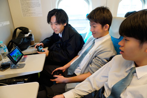
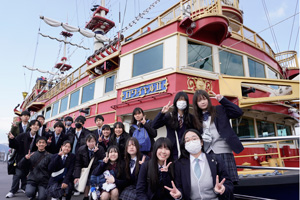
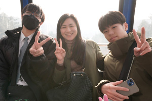
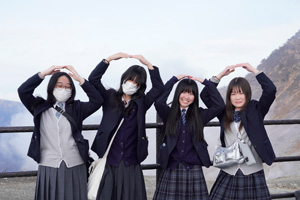
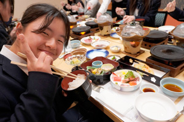
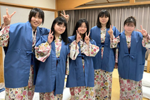
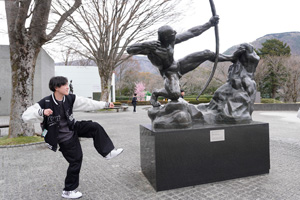
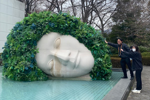
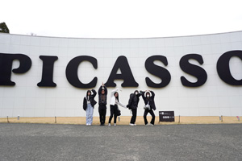
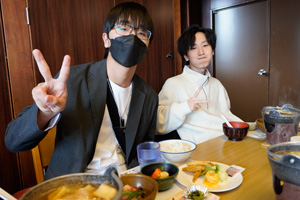
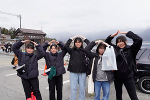
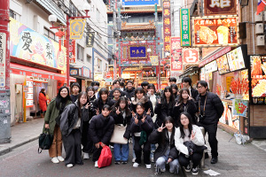
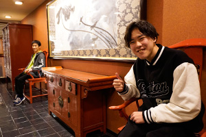
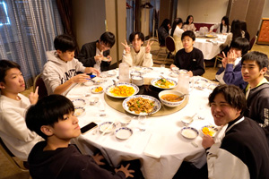
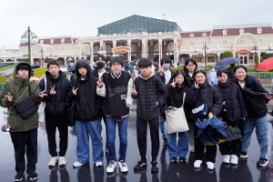
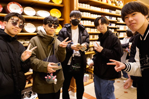
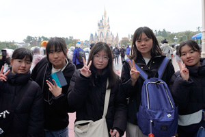
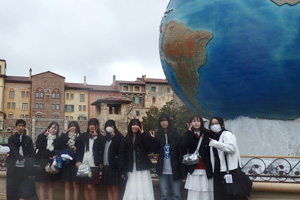
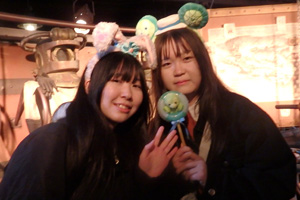
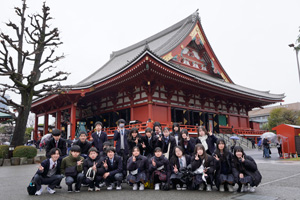
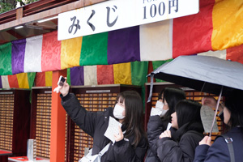
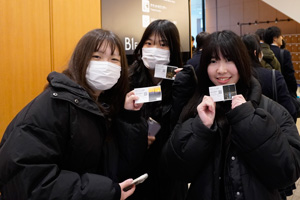
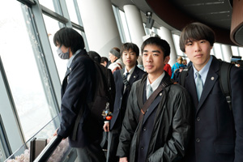
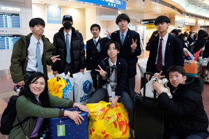
| ＜＜前のニュース | 次のニュース＞＞ |